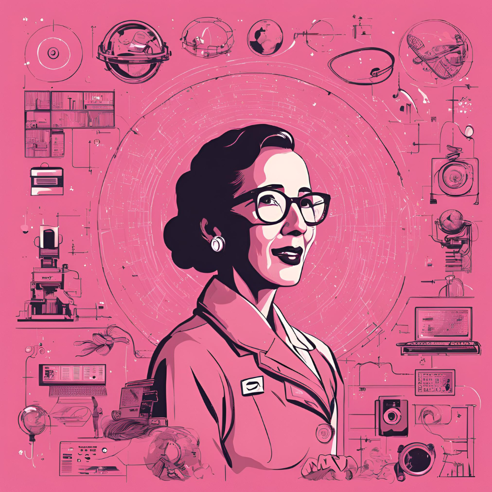

Katherine Johnson
(Computador humano da Nasa)
Katherine Johnson era uma matemática brilhante, que superou barreiras de gênero e raça em uma época em que a segregação racial ainda era uma realidade nos Estados Unidos. Ela não era apenas uma 'calculadora humana' ou uma funcionária da NASA. Katherine desempenhou um papel crucial na corrida espacial, realizando cálculos vitais que garantiram o sucesso das missões espaciais, incluindo o histórico pouso na Lua da Apollo 11. Sua precisão matemática e habilidades analíticas permitiram que astronautas como John Glenn confiassem nela cegamente, quebrando estereótipos e abrindo caminho para futuras gerações de mulheres e afro-americanos na ciência e tecnologia. Sua história nos lembra que, com coragem e determinação, podemos alcançar as estrelas, literalmente.